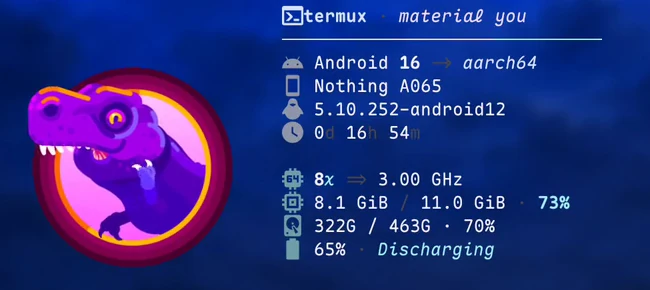

Termux Launcher
An Android home screen with a real Linux terminal
Home
Floating terminal
Assistant
Android home with widgets
Floating glass terminals
Live glass on glass
AI assistant page
Kitty images in the terminal

On-device voice